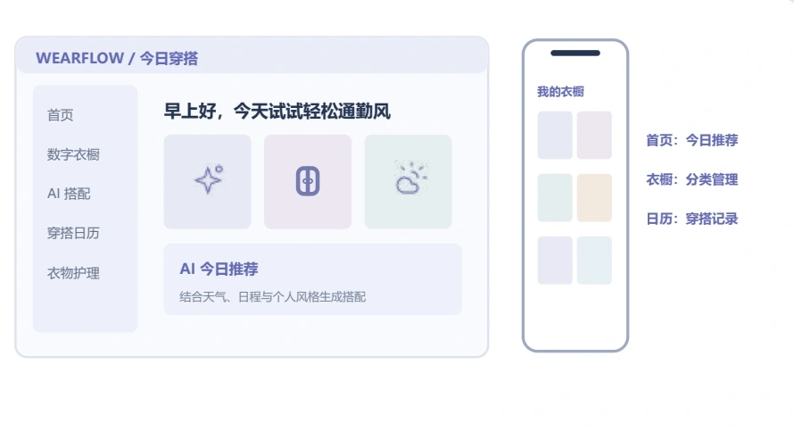

织序 WearFlow
扫描一件新衣、决定今天穿什么、处理一件闲置衣物。为这几种不同的动作，设计一套看得懂的衣橱图标。
查看完整展板从衣物到操作
「衣橱」可以直接借用柜门的轮廓，「天气穿搭」还需要让人看见天气与衣服的关系。设计从衣架、衣柜和衣物的形态入手，简化轮廓，再把这些元素与扫描、收纳、护理等动作组合起来。
同一套绘制规则
每枚图标使用 24 × 24 px 画板，在 20 × 20 px 安全区内绘制。2 px 线宽、圆头端点和圆角把八个不同含义的符号连成一组。
放回每天使用的界面
在首页用图标进入今日推荐，在衣橱里按类管理衣物，在日历上回看搭配。图标与文字共同说明各个入口的用途。

下一步怎样验证
展板提出的测试方法是隐藏文字标签，请 10 名目标用户辨认图标，并记录理解偏差和识别用时。80% 是整体识别正确率的设计目标，实际测试数据仍待补充。